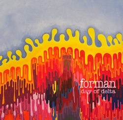

LYRICS
Fat Seeds You got so many clever lines up in your head so slap down sheet of paper, forcing ink from the pen and it's you...it's alright You think you just found a melody - scribble it down and then you turn on the radio, hear the same sound is it you?...it's alright If I want a message I'll stuff it down in the ground The newsmen keep on calling but I'm nowhere to be found You're running out of the clever lines up in your head And now you're fighting with the paper, strangling the pen "are you...are you alright?" You want to hide fuckin messages? You water it down, fill it up with nonsense; it's making you drown ...and it's alright Maybe you never get old Maybe I'm needing some new eyes because I'm so tired If I want a message I'll stuff it down in the ground The newsmen keep on calling but I'm nowhere to be found back to tracklist John Galt Line If you wanna go then just hit the road If your breath puffs like it's cold then don't forget your coat If we live where it always snows What happens to you when I go home? when I go home... If you wanna stay you're gonna have to do a few things for me Don't keep me up stop tryin' tellin' stories when I'm tryin' to sleep Put your clothes on Start thinking what it'll be like when I'm gone When I'm gone... Don't stand next to me and don't you try and hide I've got manifest destiny on my side on my side... back to tracklist Head West My lady from the south: Skinny as a stick and she thinks she knows what's good If she asked me to take her and move away bet my life I would My old friend from the east: We don't talk anymore I remember when she said that the night was ours now the moon makes her bored When the girls come 'round I'll stick around for a while When the girls come 'round They don't smile, oh no no So just keep leaving Oh jesus in the north: Time to give me a sign or make me fall in line for good If she asked me to take her and move away I don't think I bet my life I could When the girls come 'round I'll stick around for a while When the girls come 'round They don't smile Oh no no So just keep leaving back to tracklist Sour Song I thought you were the one I knew but clearly I was wrong “Maybe just your point of view," says madam. I’m sick of pretending It's something I already know The last three days were driving me wild Some may say, why? I thought I loved her but I was wrong This lovely girl was made for someone else I thought you were the one I knew It turns out I was wrong I tried to find the better you but the recipe’s too long It seems that your baking was the sweetest part of you. A long parade is clouding my mind Left right left all night. I thought I loved her but I was wrong This lovely girl was made for someone else You. Wanted to be with me Begged me to be with you I can't believe I came up with the answer no back to tracklist Delta Dirge any words of wisdom? back to tracklist Never in Bed with Jenny Light me up and count the days Hold me down before you cut away Fix me before its to late Try to hold on but you hesitate And I’m Always on my way Always on my way You always wanted me To go out an rage but History’s been telling me Some different things Always on my way Always on my way My head is full of constant thought Drop the phone and never pick it up Quickly! I stew and I turn Given 2nd chances I don’t think I’ll ever learn Because I’m Always on my way Always on my way You always wanted me To go out an rage but History’s been telling me Some different things Always on my way Always on my way back to tracklist